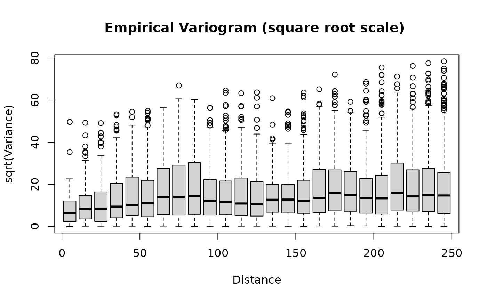
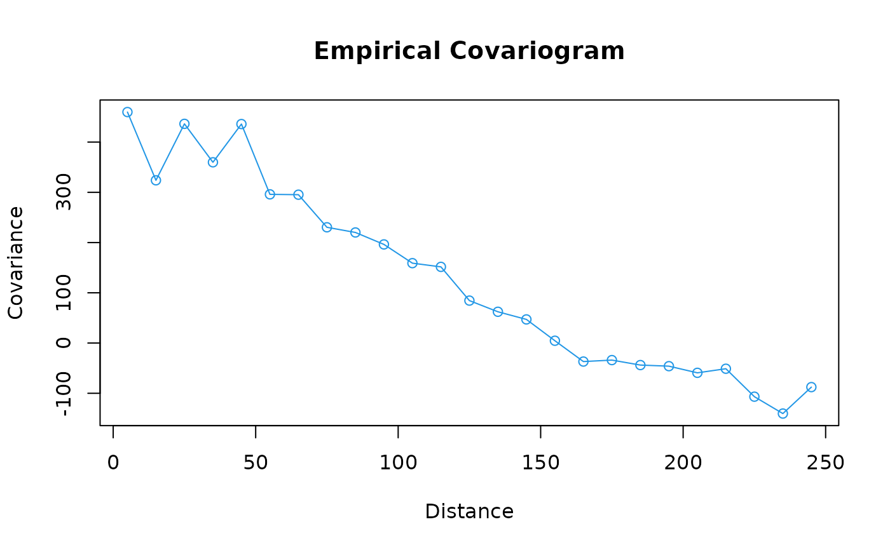

vgram.Rdvgram computes pairwise squared differences as a function of distance.
Returns an S3 object of class "vgram" with either raw values or statistics from
binning. crossCoVGram is the same as vgram but differences are
taken across different variables rather than the same variable.
plot.vgram and boxplotVGram create lineplots and boxplots of
vgram objects output by the vgram function. boxplotVGram plots
the base R boxplot function, and plots estimates of the mean over the boxplot.
The getVGMean function returns the bin centers and means of the vgram
object based on the bin breaks provided by the user.
vgram(loc, y, id = NULL, d = NULL, lon.lat = FALSE,
dmax = NULL, N = NULL, breaks = NULL,
type=c("variogram", "covariogram", "correlogram"))
crossCoVGram(loc1, loc2, y1, y2, id = NULL, d = NULL, lon.lat = FALSE,
dmax = NULL, N = NULL, breaks = NULL,
type=c("cross-covariogram", "cross-correlogram"))
boxplotVGram(x, N=10, breaks = pretty(x$d, N, eps.correct = 1), plot=TRUE, plot.args, ...)
# S3 method for vgram
plot(x, N=10, breaks = pretty(x$d, N, eps.correct = 1), add=FALSE, ...)
getVGMean(x, N = 10, breaks = pretty(x$d, N, eps.correct = 1))Matrix where each row is the coordinates of an observed point of the field
Value of the field at locations
Matrix where each row is the coordinates of an observed point of field 1
Matrix where each row is the coordinates of an observed point of field 2
Value of field 1 at locations
Value of field 2 at locations
A 2 column matrix that specifies which variogram differnces to find. If omitted all possible pairing are found. This can used if the data has an additional covariate that determines proximity, for example a time window.
Distances among pairs indexed by id. If not included distances from from directly from loc.
If true, locations are assumed to be longitudes and latitudes and distances found are great circle distances (in miles see rdist.earth). Default is FALSE.
Maximum distance to compute variogram.
Number of bins to use. The break points are found by the pretty function and so ther may not be exactly N bins. Specify the breaks explicity if you want excalty N bins.
Bin boundaries for binning variogram values. Need not be equally spaced but must be ordered.
An object of class "vgram" (an object returned by vgram)
If TRUE, adds empirical variogram lineplot to current plot. Otherwise
creates new plot with empirical variogram lineplot.
If TRUE, creates a plot, otherwise returns variogram statistics output by
bplot.xy.
Additional arguments to be passed to plot.vgram.
One of "variogram", "covariogram", "correlogram", "cross-covariogram", and
"cross-correlogram". vgram supports the first three of these and
crossCoVGram supports the last two.
Additional argument passed to plot for plot.vgram or to
bplot.xy for boxplotVGram.
vgram and crossCoVGram return a "vgram" object containing the
following values:
Variogram or covariogram values
Pairwise distances
Calling string
Matrix of statistics for values in each bin. Rows are the summaries returned by the stats function or describe. If not either breaks or N arguments are not supplied then this component is not computed.
Bin centers.
If boxplotVGram is called with plot=FALSE, it returns a
list with the same components as returned by bplot.xy
See any standard reference on spatial statistics. For example Cressie, Spatial Statistics
#
# compute variogram for the midwest ozone field day 16
# (BTW this looks a bit strange!)
#
data( ozone2)
good<- !is.na(ozone2$y[16,])
x<- ozone2$lon.lat[good,]
y<- ozone2$y[16,good]
look<-vgram( x,y, N=15, lon.lat=TRUE) # locations are in lon/lat so use right
#distance
# take a look:
plot(look, pch=19)
#lines(look$centers, look$stats["mean",], col=4)
brk<- seq( 0, 250,, (25 + 1) ) # will give 25 bins.
## or some boxplot bin summaries
boxplotVGram(look, breaks=brk, plot.args=list(type="o"))
plot(look, add=TRUE, breaks=brk, col=4)

#
# compute equivalent covariogram, but leave out the boxplots
#
look<-vgram( x,y, N=15, lon.lat=TRUE, type="covariogram")
plot(look, breaks=brk, col=4)

#
# compute equivalent cross-covariogram of the data with itself
#(it should look almost exactly the same as the covariogram of
#the original data, except with a few more points in the
#smallest distance boxplot and points are double counted)
#
look = crossCoVGram(x, x, y, y, N=15, lon.lat=TRUE, type="cross-covariogram")
plot(look, breaks=brk, col=4)